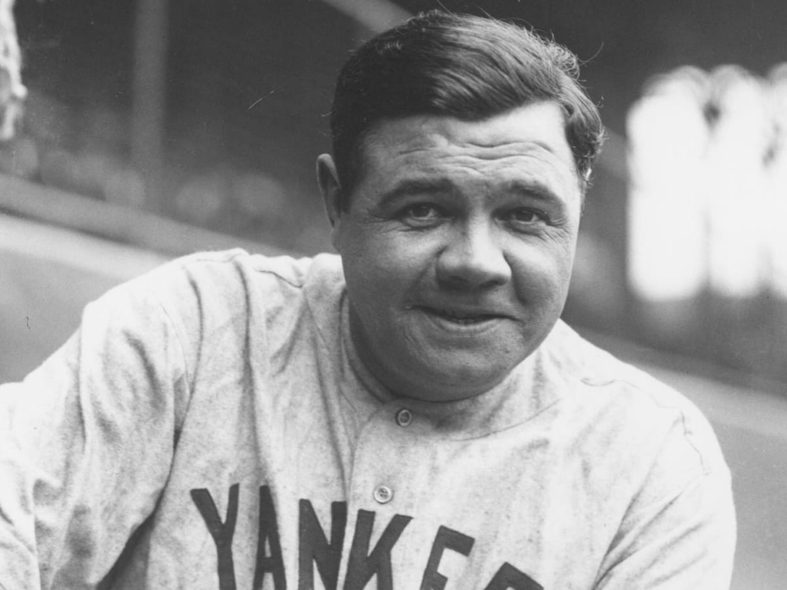
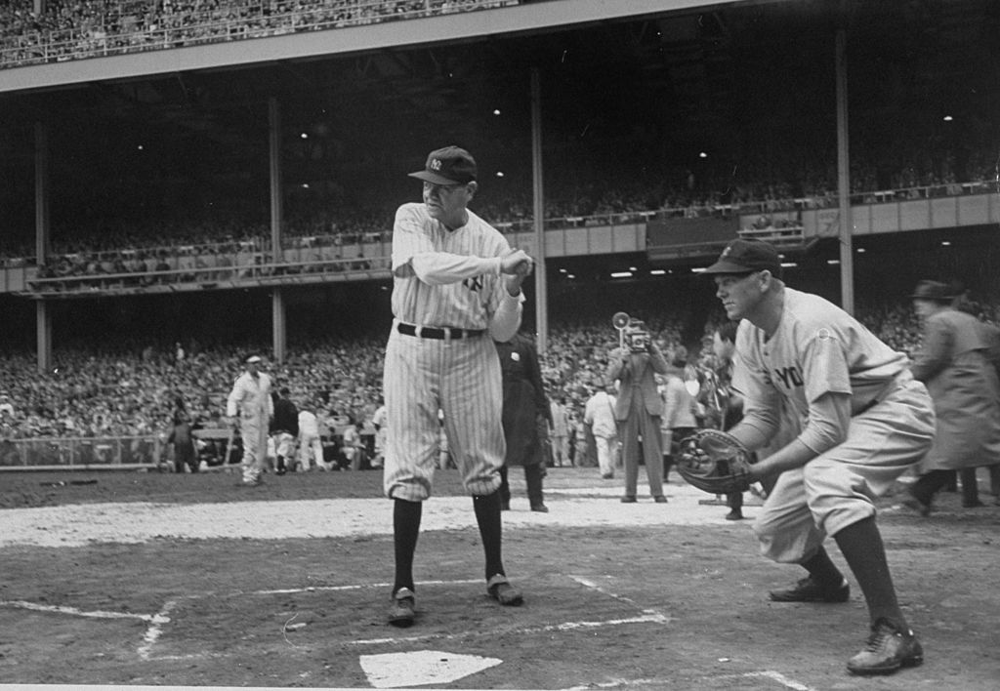

Born: February 6, 1895, Pigtown, Baltimore, MD
Died: August 16, 1948, MSKCC, New York, NY
Nicknames: Babe, Bam, Jack Dunn's baby, Jidge, Sultan of Swat
Number: 3 (New York Yankees / Outfielder), 3 (Atlanta Braves / Outfielder)
Spouse: Claire Merritt Ruth (m. 1929–1948), Helen Ruth (m. 1914–1929)
Children: Dorothy Ruth, Julia Ruth Stevens
Position: Pitcher, Outfielder

Achievements:
First batter to hit 50 home runs in a season (54 in 1920)
First batter to hit 60 homers in a season (60 in 1927)
First batter to hit 500 homers in a career (August 11, 1929)
2× All-Star (1933, 1934)
7× World Series champion (1915, 1916, 1918, 1923, 1927, 1928, 1932)
1923 AL MVP.
First batter to hit 50 home runs in a season (54 in 1920)
First batter to hit 60 homers in a season (60 in 1927)
First batter to hit 500 homers in a career (August 11, 1929)
2× All-Star (1933, 1934)
7× World Series champion (1915, 1916, 1918, 1923, 1927, 1928, 1932)
1923 AL MVP.
Why was he had such a reputation
Babe Ruth manged to repair the lack of faith of people had baseball and the fun as well with
his winning shots that sparked the interest of the people and got people to like the game once
more and he also manged to same a certain baseball game in new york which helped also promote baseball!
